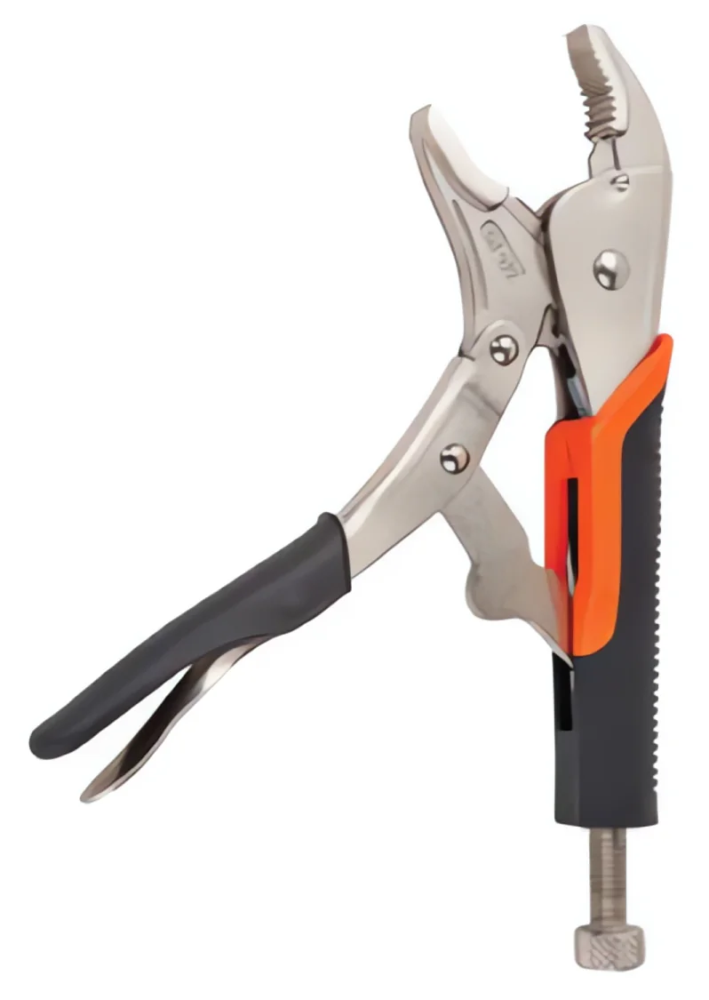

GROZ · Pliers & Cutters
Self Locking Pliers
CAT NR SLP/10C · ORD NR 31631
| CAT NR (catalogue number) | SLP/10C |
|---|---|
| ORD NR (order number) | 31631 |
| Box quantity | 25 |
| Length (inch) | 10 |
| Length (mm) | 250 |
Ask for a quote The catalogue PDF, page 211
“Ask for a quote” opens this product in the catalogue: add it to your quote and send it. Buyers from Africa, the Gulf and worldwide are welcome; prices in USD, EUR or INR.
From the GROZ Workshop Tools CB-05 catalogue. Not yet verified: these details were read from the printed catalogue automatically; check the catalogue page before ordering.